LoooX like the internship is finished.
maar ik kijk graag terug naar wat ik allemaal daar gemaakt heb.
Mijn ontwikkeling bij RM-sanitair
Stage verslag
Na veel onderzoek naar het bedrijf en mijn eigen inhoud aan opdrachten, is dit het resultaat geworden van mijn verslagmagazin.
hierin staat alle basis informatie in over het bedrijf, hoe ze te werk gaan tot aan de gescheidenis van het bedrijf. Ook heb ik hier al mijn gemaakte opdrachten in staat wat ik bij RM-sanitair heb mogen maken. Denk bijvoorbeeld aan promotie materiaal voor LoooX wat naar Adwise (almelo) gestuurd wordt. Maar ook foto's van de nieuwe showroom en de nieuwe bedrijfsbus.
Klik op de afbeelding om het beter te bekijken.
Fotografie
"Als ik je niet had opgehaald, dan was je hier om 20:00 uur nog."
: (M) Stagebegeleider
Stuur mij op pad met de camera en je ziet mij voor een lange tijd niet terug. Maar weet wel, dat ik met veel foto's terug kom van jullie showroom!
Hier zijn een paar van de foto's die ik heb mogen maken van de showroom, maar ook van de bus.
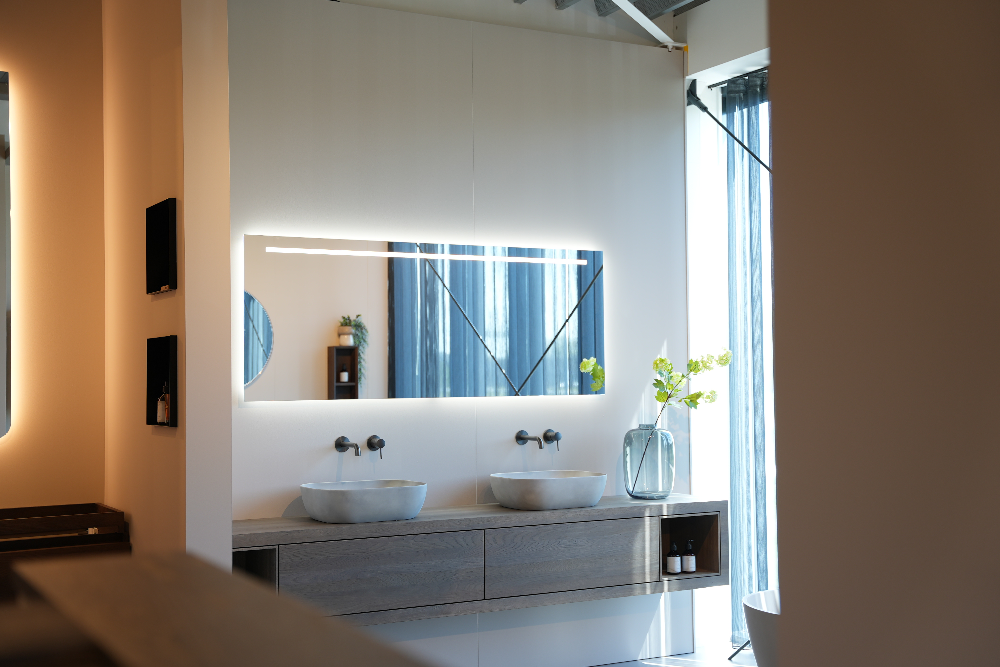
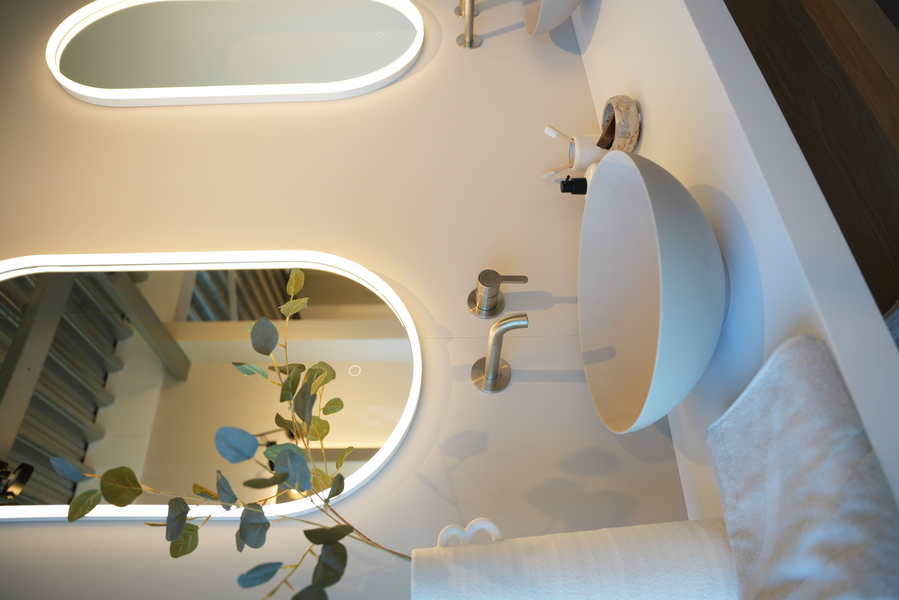
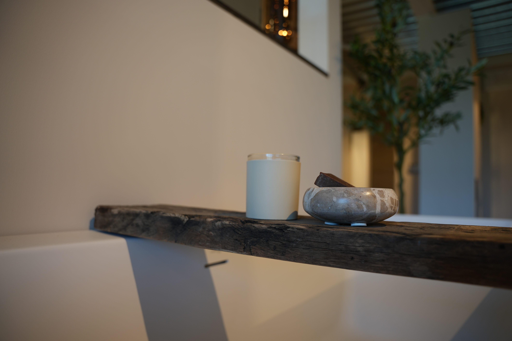
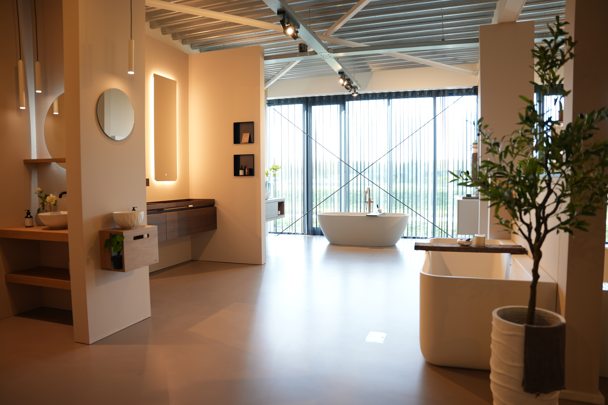
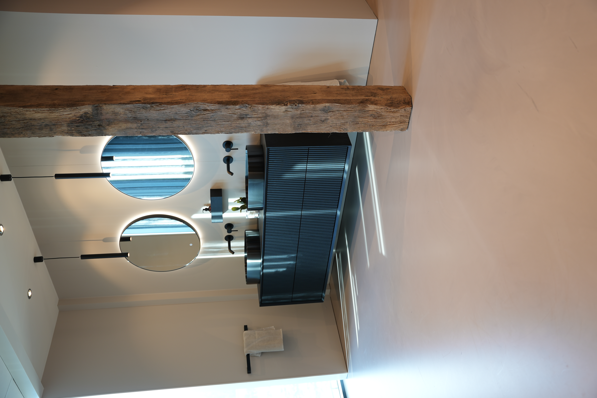
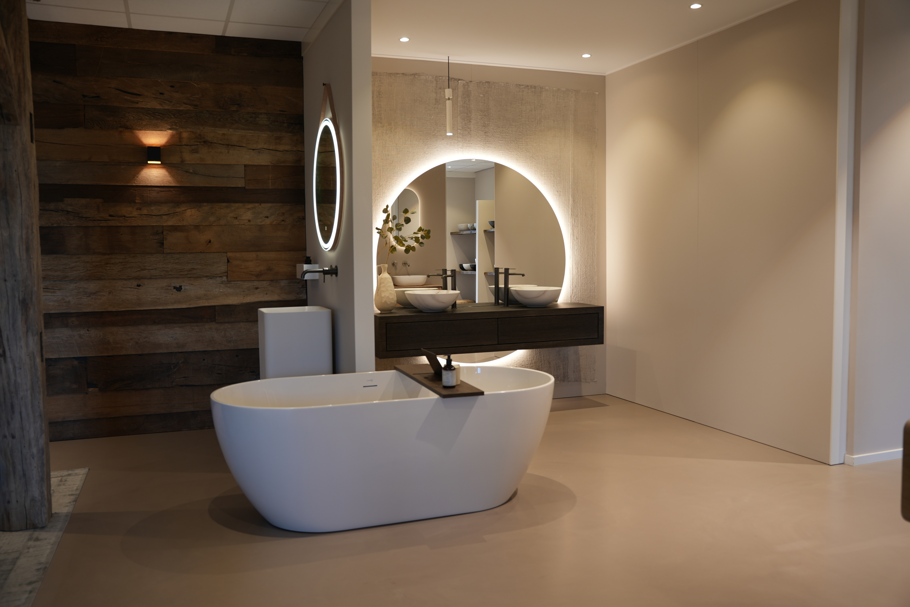
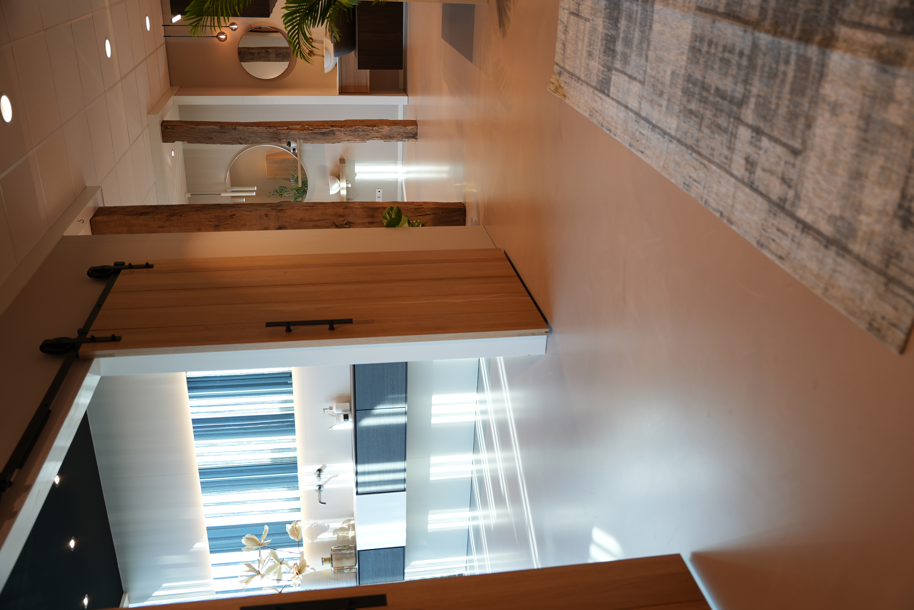
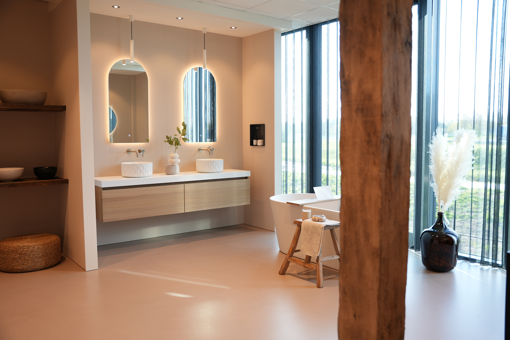
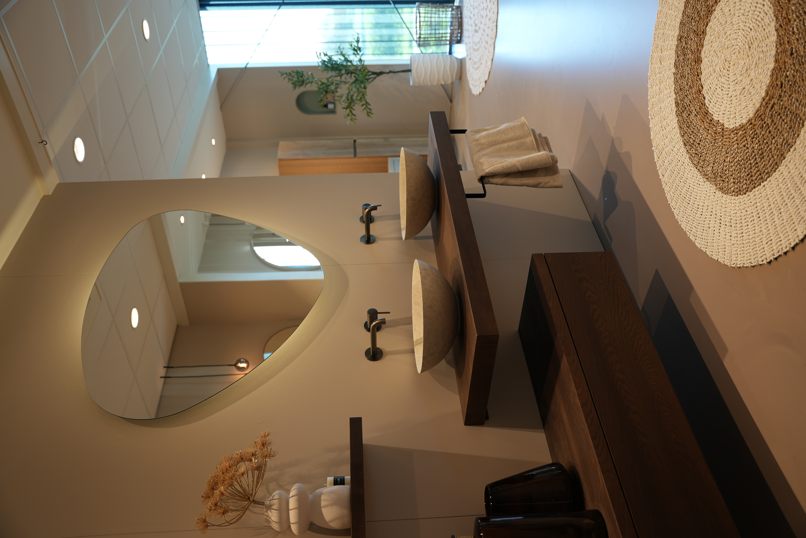

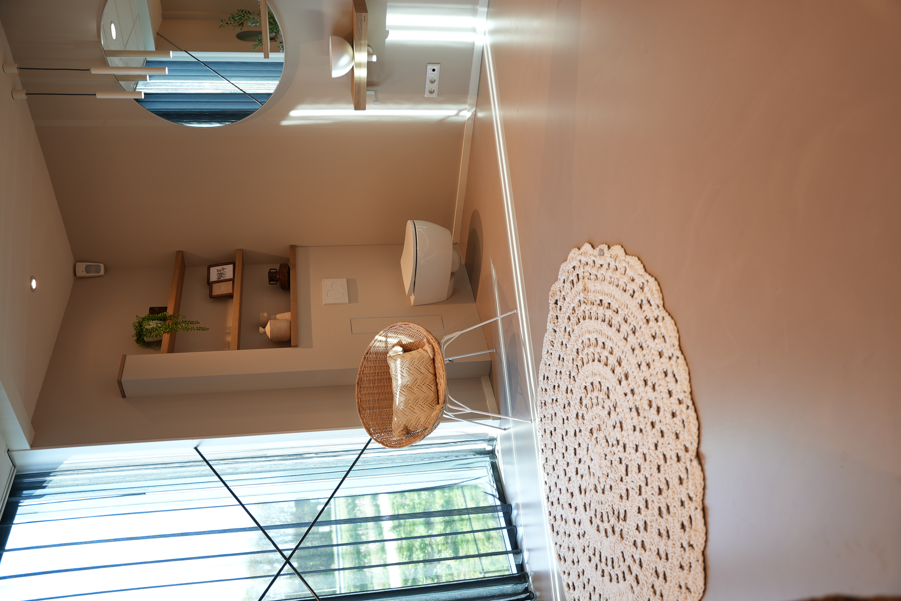
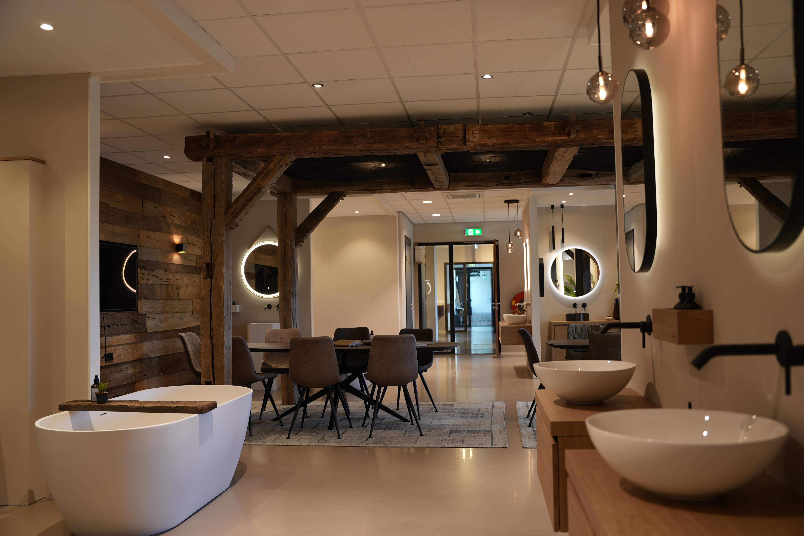
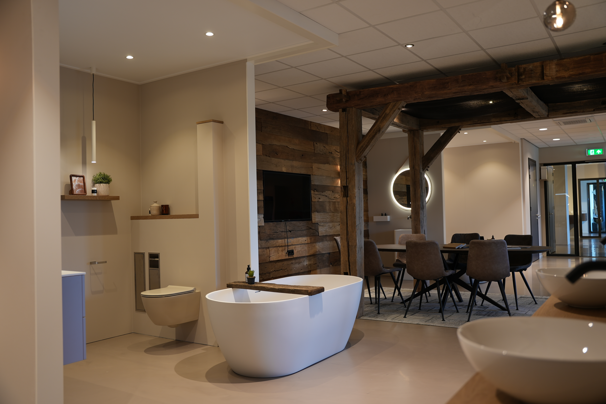
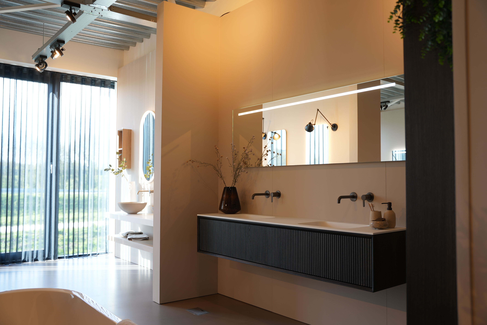
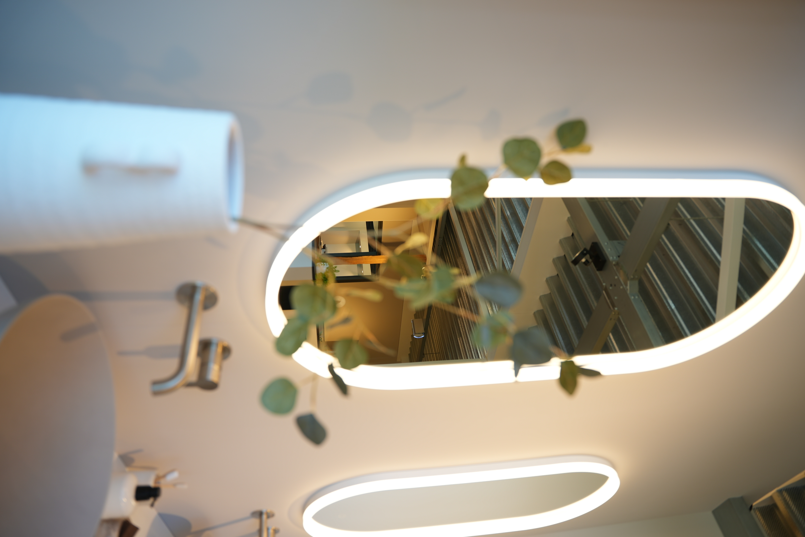
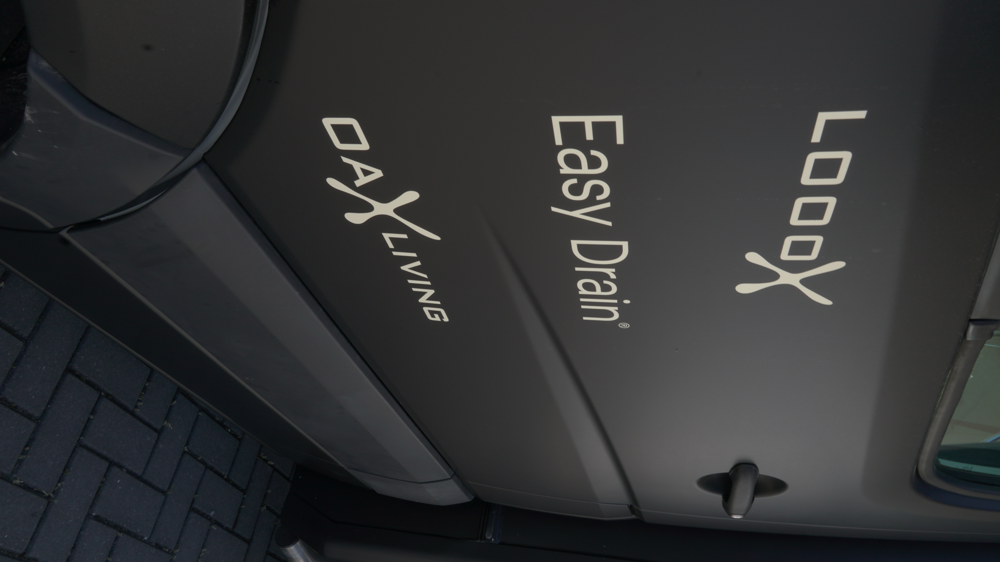
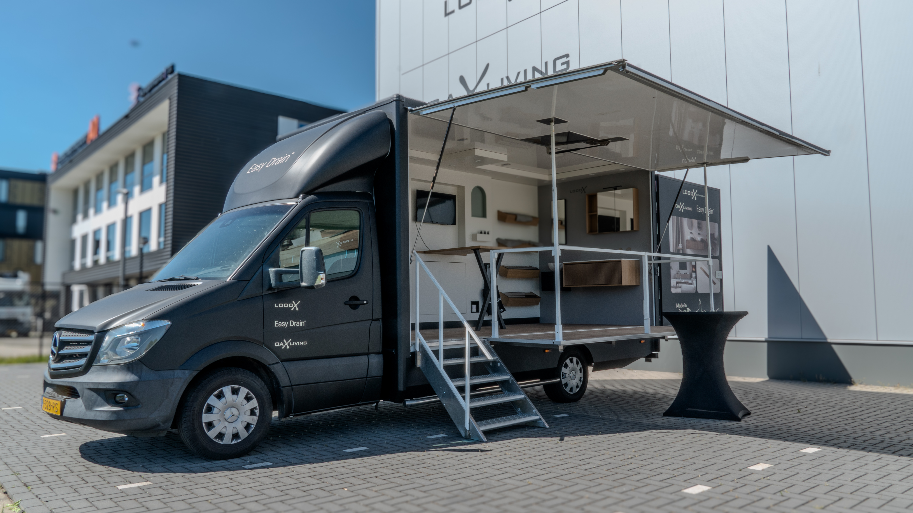
Grafisch werk
Ik heb aan verschillende grafisch opdrachten mogen werken, opdrachten die aansloten op fotografie, maar ook opdrachten die naar de buurlanden werden gestuurd voor de promotie van de LoooX producten.
De opdrachten waren erg afwisselend, waardoor de stage leerzaam bleef. Doordat ik veel met grafisch bezig ben geweest, had ik ook veel nieuwe dingen ontdekt binnen Adobe Indesign. Allemaal van die kleine dingen die ik in mijn eigen stageverslag had verwerkt.
Hover/ klik op de afbeelding, achter mij zijn nog 2 dingen te vinden.

{kind=link}
{kind=link}
{kind=link}
{kind=link}
Mix media
Waar ik uren mijn tijd in kan steken, maar het ook eens weg moet leggen, is videografie. Ik ben veel bezig geweest, zowel samen als alleen, met het filmen van de showroom. Er moesten promotievideo's komen voor op de sociale media van LoooX, maar er moesten ook video's komen die naar Adwise gestuurd moesten worden.
Tijdens deze stage heb ik op het gebied van videografie veel geleerd over colorgrading en het werken met LUT's in de nabewerking (filmen in LOG).
zoek ze op online
Naast mijn gemaakte werk voor hun, bij hun, onderhouden zij zelf de sociale media ook met de nieuweste updates.